PLAYER / 010NEW GENERATION WORLD 11
糸師 冴
ITOSHI SAE — THE PLAYMAKER
- POSITION / 位置
- Attacking midfielder
- FOOT / 利き足
- Left
- NUMBER / 背番号
- 10
- VISION / 視野
- One pass ahead
* NOT A PLAYER CARD. JUST AN OBSESSION.
A STUDY IN PERFECT CONTROL
SAE ITOSHI
attacking midfielder / Japan U-20
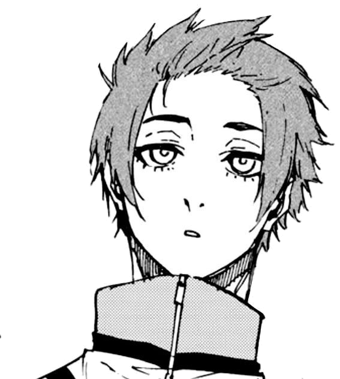
READER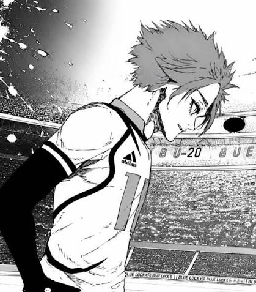
ITOSHI SAE — THE PLAYMAKER
* NOT A PLAYER CARD. JUST AN OBSESSION.
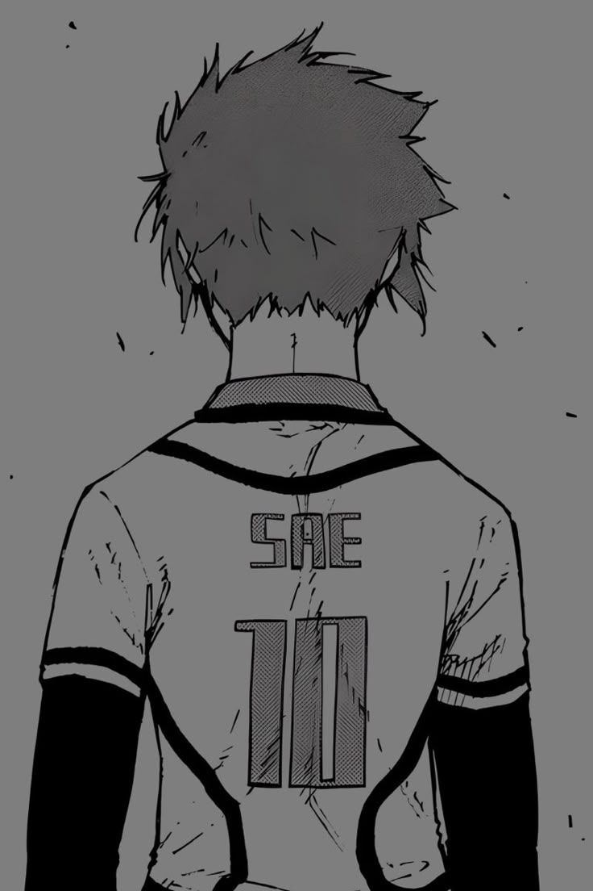
Talent isn't a promise.
It's an expectation.
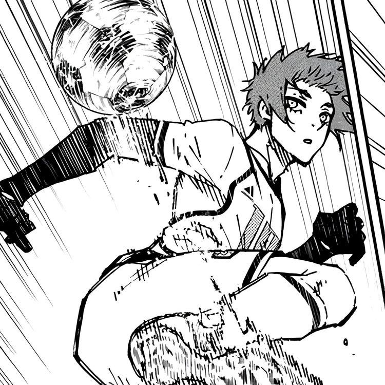
A MOMENT BEFORE THE PASS
The opening isn't found by accident. He watches the shape of the field change, then plays into the space that is about to exist.
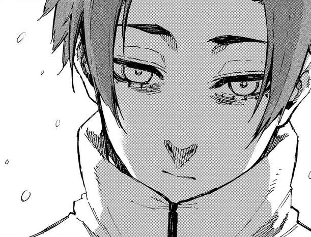
ONE PASS, ONE POINT OF VIEW
Small moments. Exact angles.
One very particular point of view.
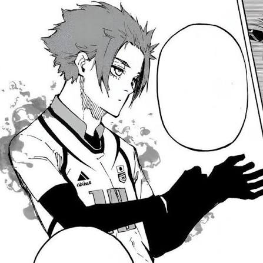
Not because the pass is slow. Because the decision was made before anyone else saw the lane.
THE SPACE WAS HIS BEFORE THE BALL MOVED.
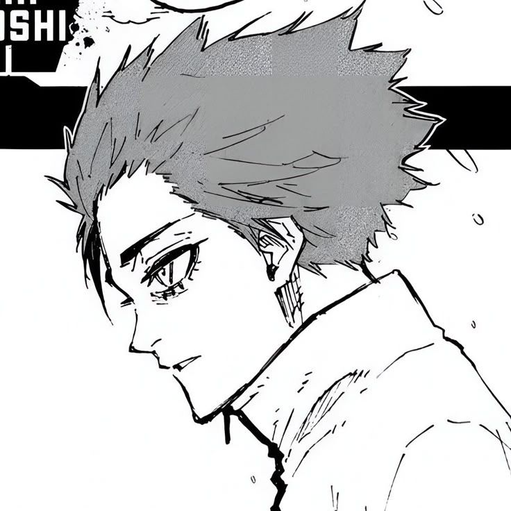
HOW HE SEES IT
Every movement changes the map. Sae reads the next few seconds like they're already printed on the page.
no wasted motion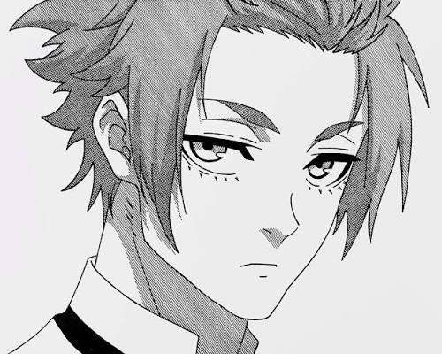
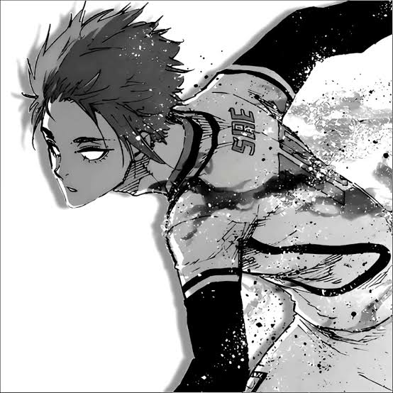
THE MOMENT THE PAGE TILTS
Control isn't stillness. It's choosing exactly when to break it.
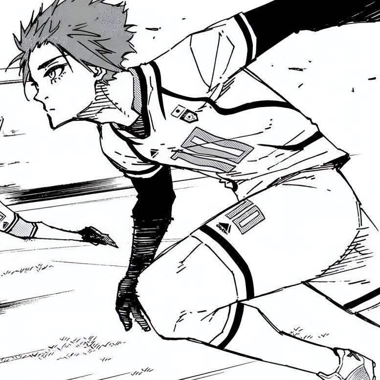
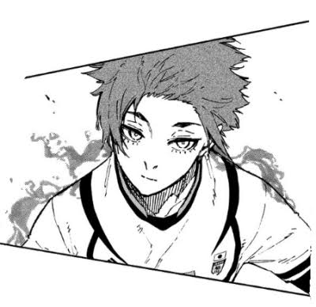
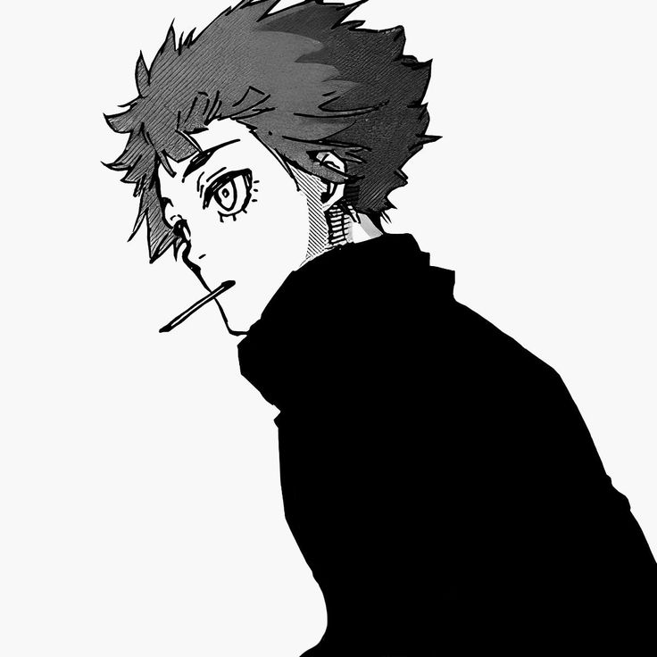
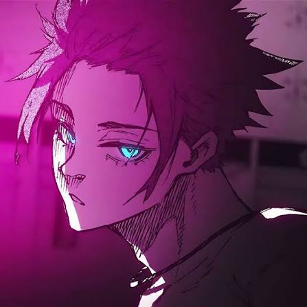
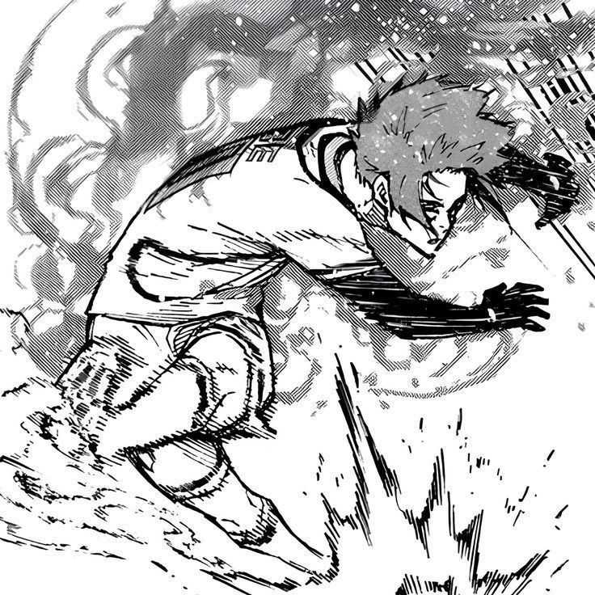
THE SOUND OF A QUIET WALK BACK TO THE CENTER CIRCLE.
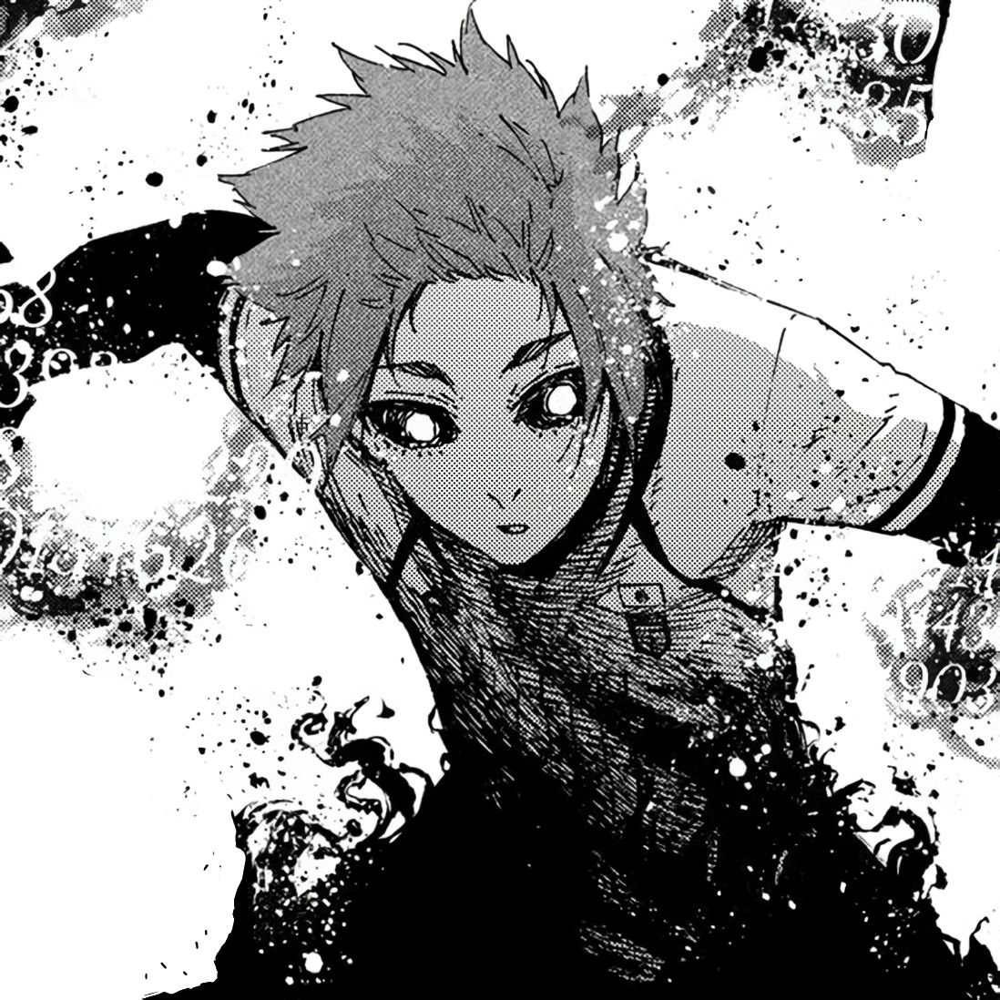
OPENS A SPOTIFY SEARCH IN A NEW TAB / NO EMBEDDED PLAYER
ADD YOUR OWN PANEL
Favorite moment, best pass, one thought in the margin. Pin it here for your visit.
STAYS IN THIS BROWSER ONLY.